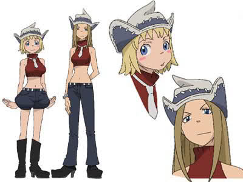

파티 톰슨<좌>,리즈 톰슨<우>(Patti Thompson,Liz Thompson)

<파티 톰슨>패트리시아 톰슨 줄여서 파티 톰슨이라 부르며 키드의 무기가 되기 전에는 리즈와 함께 길거리에서 자랐다. 자신들의 무기로 변신 할 수 있는 능력을 악용해 범죄를 저지르며 먹고 산 덕에 '브루클린의 악마'라는 별명까지 붙을 정도로 악명이 높았다. 어리버리한 성격에 마이페이스. 신경질적이고 예민한 키드가 별 것 아닌 일로 풀이 죽는 걸 보고 웃어대기도 하고, 부드러운 성격이지만, 가끔씩 화가 나면 성격이 180도 뒤집어져 독설을 내뱉기도 한다 <리즈 톰슨>엘리자베스 톰슨 줄여서 리즈 톰슨이라 부르며 키드의 무기가 되기 전에는 파티와 함께 길거리에서 자랐다. 자신들의 무기로 변신 할 수 있는 능력을 악용해 범죄를 저지르며 먹고 산 덕에 '브루클린의 악마'라는 별명까지 붙을 정도로 악명이 높았다. 그러나 이런 과거 덕에, 동생과 함께 무기 치고는 굉장한 능력을 보유하고 있다.애니메이션 기준으로 6화에서 마카 알반과 프랑켄 슈타인이 그들의 영혼을 관찰할 때 '길거리에서 자랐기 때문에 키드와 같은 기품 있는 영혼을 동경한다'고 했다. 겉모습을 중시하는 타입으로, 초 필기시험 때엔 공부 시작 전에 도수없는 안경에 정장까지 차려입고 공부를 하려 하나, 공부보다 눈썹 다듬기라든가, 손톱 관리를 하는 모습을 보였다